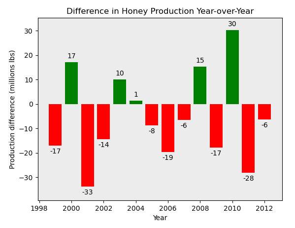

I have experience using tools/languages such as: SQL, Python (pandas, scikit-learn, Matplotlib, SciPy, and many other libraries), R, Power BI (DAX/Power Query), Excel/VBA, JASP, HTML, MongoDB, Google Analytics, and Julia. I also have (more limited) experience with PHP, C#, JavaScript, Go, Google Tag Manager, Looker, SSIS, Ruby, batch scripts, and Tableau. I have configured Google Analytics and Google Tag Manager to track link clicks on this webpage.
The links below lead to Jupyter Notebooks containing analysis I conducted using Python, SQL, R, and the Julia programming language.
Click here to view a COVID outcome predictor written in Python with scikit-learn (binary classification, using Decision Tree, Logistic Regression, Naïve Bayes, Random Forest,
k-Nearest Neighbors, Support Vector Machine, and Gradient Boosting models).
Click here to view a Random Forest model (written in Python with scikit-learn) which attempts to predict if individuals will buy insurance.
Click here to view a regression model (written in Python with scikit-learn) which attempts to predict house prices.
Click here to view a Python notebook which describes several statistical tests and concepts I am familiar with.
Click here to view a Python notebook that contains a chain-ladder calculator.
Click here to view a Python notebook that compares data between two sources.
Click here to view English football analysis conducted with Python and SQL.
Click here to view honey production analysis conducted with Python and SQL.
Click here to view Scottish football analysis conducted with R.
Click here to view London housing analysis conducted with Julia.
Click here to view London housing analysis conducted with SQL.
Click here to view Italian football analysis conducted with SQL.
Click here to view k-means cluster analysis written in Python with sklearn.
Click here to view COVID outcome predictor written in Python with PyTorch (multi-class classification, using neural network model).
Click here to view Python notebook showing the stationary noise removal from audio.
The links below lead to Jupyter Notebooks containing simple web crawlers that download and store data from two ecommerce sites.
Click here to view web crawler written in Ruby.
Click here to view web crawler written in Julia.
Click here to view web crawler written in Python.
The links below lead to screenshots of BI dashboard documents I created.
Click here to view Power BI document presenting data from a fictional company.
Click here to view Looker document presenting video games sales data.
Click here to view Tableau document presenting real estate data.
The link below leads to a page explaining how to deploy Google Analytics via Google Tag Manager.
Click here to view Google Tag Manager/Google Analytics deployment guide.
The link below leads to a page containing an Excel file that with a simple chain-ladder method calculator.
Click here to view Excel chain-ladder calculator.
The link below leads to a page explaining how to create a comprehensive calendar in Power Query using M code.
Click here to view Power Query M code page.

{kind=link}
{kind=link}
{kind=link}